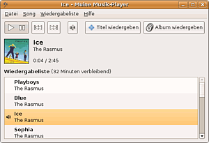

Muine
Zum Verständnis dieses Artikels sind folgende Seiten hilfreich:

Der Audio-Player Muine  basiert auf GTK, d.h. Muine bindet sich gut in die Desktopumgebungen GNOME und Xfce ein. Das Programm hat eine einfache und unkomplizierte Oberfläche, kann mit Ogg Vorbis, FLAC, AAC und MP3 Dateien umgehen und über Replay Gain den Lautstärkepegel einer Datei automatisch anpassen. Des Weiteren kann Muine Cover für Musikalben von MusicBrainz bzw. Amazon
basiert auf GTK, d.h. Muine bindet sich gut in die Desktopumgebungen GNOME und Xfce ein. Das Programm hat eine einfache und unkomplizierte Oberfläche, kann mit Ogg Vorbis, FLAC, AAC und MP3 Dateien umgehen und über Replay Gain den Lautstärkepegel einer Datei automatisch anpassen. Des Weiteren kann Muine Cover für Musikalben von MusicBrainz bzw. Amazon  herunterladen und über Plugins um weitere Funktionen ergänzt werden.
herunterladen und über Plugins um weitere Funktionen ergänzt werden.
Installation¶

Muine kann bis einschließlich Ubuntu 11.04 aus den offiziellen Paketquellen installiert werden [1]:
muine (universe)
muine-plugin-audioscrobbler (universe, optional, Plugin, um Daten über die abgespielte Musik an LastFM zu schicken. )
muine-plugin-inotify (universe, optional, ermöglicht Veränderungen im Musikordner zu erkennen und automatisch die Musikdatenbank auf einem aktuellen Stand zu halten. )
muine-plugin-trayicon (universe, optional, Plug-In, um Muine in die Traybar zu minimieren. )
muine-shell (universe, optional, Muine von der Kommandozeile aus bedienen, ab Ubuntu 10.04 nicht mehr verfügbar)
 mit apturl
mit apturl
Paketliste zum Kopieren:
sudo apt-get install muine muine-plugin-audioscrobbler muine-plugin-inotify muine-plugin-trayicon muine-shell
sudo aptitude install muine muine-plugin-audioscrobbler muine-plugin-inotify muine-plugin-trayicon muine-shell
Nach der Installation kann man Muine unter
"Anwendungen -> Unterhaltungsmedien -> Muine Musik-Player"
starten.
Bedienung¶
Muine verwaltet eingefügt Lieder in einer Datenbank. Ganze Ordner können über
"Datei -> Ordner importieren"
in die Datenbank eingepflegt werden. Sind die Titel einmal eingelesen worden, so können über "Titel wiedergeben" bzw. "Album wiedergeben" einzelne Titel oder ganze Alben zur Playlist hinzugefügt werden.
- Erstellt mit Inyoka
-
 2004 – 2017 ubuntuusers.de • Einige Rechte vorbehalten
2004 – 2017 ubuntuusers.de • Einige Rechte vorbehalten
Lizenz • Kontakt • Datenschutz • Impressum • Serverstatus -
Serverhousing gespendet von